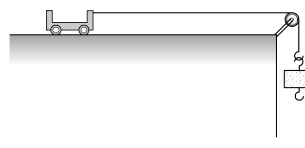
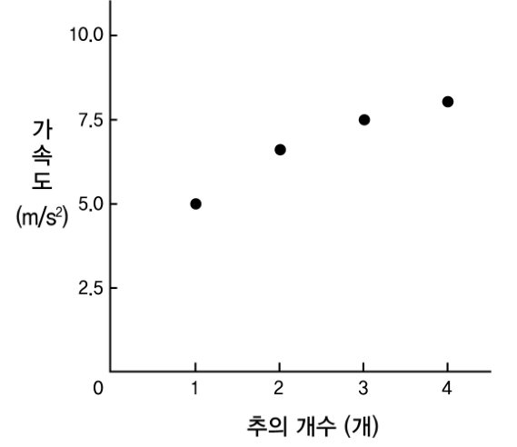
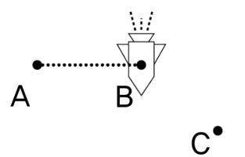
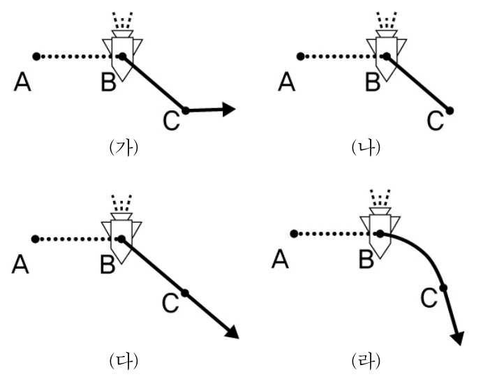

물리교육론 객관식 4문항 — 브루너·클로퍼, 변인 통제, 로슨의 순환학습, 힘과 운동 오개념 진단Bruner & Klopfer · variable control in cart experiment · Lawson's learning cycle · diagnosing force-motion misconceptions
2010학년도 중등교사 임용시험 물리 1차(객관식) 9~12번 — 물리교육론 문항 묶음. 각 문항에서 알맞은 답을 고르시오.
- 전구 필라멘트는 뜨거워질수록 저항이 커진다 — 전구에서는 전류가 전압에 비례하지 않는다.
- 실로 연결된 수레와 추는 함께 가속된다: \(a=\dfrac{\text{추의 무게}}{\text{전체 질량}}\).
- 힘이 없으면 물체는 운동 상태를 유지한다(관성). 힘이 사라지면 그 순간의 속도로 곧게 나아간다.
다음은 전기회로 실험에 대한 두 학생 A, B의 대화와 실험 결과를 나타낸 것이다.
[두 학생의 대화]
학생 A : 어제 수업 시간에 “저항이 일정할 때, 전류는 전압에 비례한다.”는 내용을 배웠잖아?
학생 B : 응. 우리는 그것을 ㉠ \(V=IR\)이란 식으로 정리했었지.
학생 A : 기전력이 1.5 V인 건전지에 전구를 연결한 회로를 만든 후 동일한 건전지를 추가로 직렬로 연결하면서 전구의 밝기가 어떻게 되는지 살펴보자.
- 생 략 -
학생 A : 이상하네. ㉡ 건전지의 개수가 증가한 만큼 전구의 밝기가 밝아지지 않는 것처럼 보이네. 우리 좀 더 명확히 실험해보자. 건전지의 개수를 증가시키면서 전구 양단에 걸리는 전압과 회로에 흐르는 전류가 비례하는지 알아보면 될 거야.
- 이하 생략 -
[실험 결과]
| 건전지의 개수(개) | 전압(V) | 전류(A) |
|---|---|---|
| 1 | 1.40 | 0.37 |
| 2 | 2.76 | 0.45 |
| 3 | 4.09 | 0.51 |
| 4 | 5.42 | 0.54 |
이 대화와 실험 결과에 대한 설명으로 옳은 것을 <보기>에서 모두 고른 것은?
- ㄱ. 브루너(J. Bruner)에 의하면 ㉠의 표현양식은 상징적 표현양식이다.
- ㄴ. ㉡은 클로퍼(L. Klopfer)의 과학교육 목표 분류 중 ‘문제 발견과 해결방법 모색’에 해당한다.
- ㄷ. [실험 결과]의 표와 같이 전류가 전압에 비례하지 않는 주된 이유는 건전지를 직렬로 추가 연결하였을 때 건전지의 내부저항이 증가하였기 때문이다.
- 브루너: 작동적(행동) – 영상적(그림) – 상징적(언어·기호·식).
- ㉡에서 학생은 무엇을 하고 있는가? — 이상한 점을 발견하고 확인 방법을 계획.
- 표의 ‘전압’은 전구 양단 전압이다. 전구의 저항 V/I를 계산해 보자.
다음은 ‘힘과 가속도의 관계’를 알아보는 실험 보고서의 일부이다.
[가설] 추의 개수가 증가할수록 수레의 가속도는 정비례로 커질 것이다.
[준비물] 역학수레(500 g) 1개, 추(500 g) 4개, 도르래, 실
[실험 과정]
(1) 그림과 같이 실험 테이블에 도르래를 설치하고 실의 양 끝에 역학수레와 추를 연결한다.


(2) 시간에 따른 수레의 속력을 측정한다.
(3) (2)의 결과로부터 가속도를 계산한다.
(4) 고리 끝에 연결한 추의 개수를 증가시키면서 (2), (3)의 과정을 수행한다.
[실험 결과] (위 그래프)
이에 대한 설명으로 옳은 것을 <보기>에서 모두 고른 것은?
- ㄱ. 움직이는 수레에서 실이 수레를 잡아당기는 힘의 크기는 고리에 걸리는 추의 무게와 같다.
- ㄴ. 이 실험에서는 변인통제를 잘못했기 때문에 추의 개수와 가속도가 정비례하는 결과가 얻어지지 않았다.
- ㄷ. 고리에 추를 한 개씩 증가시키는 것은 수레에 작용하는 힘의 크기를 일정하게 증가시키기 위함으로 이때 추의 개수를 조작변인(조절변인)이라고 한다.
- 수레+추 전체에 뉴턴 제2법칙: \(nmg=(M+nm)a\).
- 추도 가속되므로 실의 장력은 추의 무게보다 작다.
- 추를 늘릴 때 가속시켜야 할 전체 질량은 일정한가?
다음은 로슨(A. Lawson)의 3가지 순환학습 모형 중 하나를 적용한 수업이다.
단계 (가) : 교사는 나무도막을 빗면에 놓고, 빗면을 미끄러져 내려온 나무도막이 바닥에서 이동하여 멈추는 거리를 측정하는 시범 실험을 하였다.
학생은 질량이 같은 여러 종류의 물체를 빗면의 같은 위치에서 놓았을 때, 바닥에서 이동하여 멈추는 거리를 측정하는 실험을 하였다. 학생은 실험 결과를 보고, ㉠ 인과적 의문을 갖는다. 그리고 그 의문에 대한 잠정적인 답을 만들고, ㉡ 그 잠정적인 답이 관찰한 결과를 모두 설명할 수 있는지 토의한다.
단계 (나) : 질량이 같은 물체가 빗면에서 내려온 뒤, 바닥에서 이동한 거리가 서로 다른 이유를 학생들이 발표하고, 교사는 다음과 같은 설명을 한다.
◦ 교사의 설명 : 같은 질량의 물체를 빗면의 같은 위치에서 놓았을 때, 바닥에서 이동한 거리가 다른 이유는 물체와 바닥 사이의 마찰력이 각각 다르기 때문이다. 마찰력이 큰 경우, 바닥에서 이동하는 거리가 더 짧다.
단계 (다) : 교사는 동일한 두 개의 나무도막을 얼음판과 운동장에서 같은 힘을 주어 밀었을 때, 미끄러져가는 거리를 비교하여 설명하게 한다.
이 수업에 관련된 설명으로 옳은 것을 <보기>에서 모두 고른 것은?
- ㄱ. 이 수업은 경험-귀추적 순환학습 모형을 적용한 것이다.
- ㄴ. 이 수업을 통해 학습한 내용에 비추어 볼 때, ㉠은 “질량이 같은 물체를 같은 위치의 빗면에 놓았는데, 왜 바닥에서 이동한 거리가 다를까?”가 적절하다.
- ㄷ. ㉡을 위해서는 연역적 추론이 필요하다.
- 로슨의 순환학습 3유형: 서술적 – 경험–귀추적 – 가설–연역적.
- 탐색 단계에서 인과적 의문을 갖고 귀추로 잠정적 설명을 만든 뒤, 관찰 자료를 다시 설명하는지 검토하는 유형은?
- ‘이 설명이 맞다면 관찰 결과는 이러해야 한다’는 추론은 무엇인가?
다음은 박교사가 힘과 운동의 관계에 대한 학생의 생각을 조사한 문항과 그 결과이다.
[문항] 주변에 행성이나 별과 같이 힘을 작용하는 어떤 물체도 없는 텅 빈 공간에서 우주선이 움직이고 있다고 가정한다. 이 우주선이 A 지점에서 B 지점으로 일정한 속도로 이동했다. 우주선이 B 지점에 왔을 때 엔진이 점화하여 AB선에 수직하게 일정한 추진력이 계속 작용하여 C 지점까지 이동했다. 이 때 다시 엔진이 꺼졌다. 그림에 이 우주선이 이동하는 경로를 B 지점 이후부터 그리시오.


[결과] 이 문항에 대해 학생들이 그린 답을 조사한 결과 위와 같은 4가지 그림이 많았다.
학생의 답지에 대해 진단한 <보기>의 진술 중 적절한 것을 모두 고른 것은?
- ㄱ. (가)와 같이 그린 학생은 작용하던 힘이 사라지면 우주선이 원래 이동하던 방향인 \(\overrightarrow{\mathrm{AB}}\)와 나란한 방향으로 복귀한다고 생각할 수 있다.
- ㄴ. (나)와 같이 그린 학생은 힘이 작용하지 않으면 언제나 물체가 멈춘다고 생각할 수 있다.
- ㄷ. (다)와 같이 그린 학생은 물체의 이동 방향으로 언제나 힘이 작용한다고 생각할 수 있다.
- ㄹ. (라)와 같이 그린 학생은 힘의 방향으로 언제나 물체가 이동한다고 생각할 수 있다.
- 올바른 경로부터: B→C는 AB 방향 등속 + 수직 방향 등가속 → 포물선. C 이후는?
- 각 그림이 어떤 생각에서 나왔는지 하나씩 대응시켜 보자.